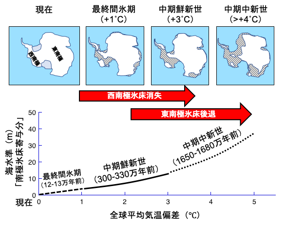

1. 温暖化で氷床はどのくらい溶けて、海面はどの程度上昇するのか？

過去の温暖期の南極氷床の分布と海水準の対応関係
温暖化のもたらす環境変化のインパクトにおいて「海面の上昇」は「生態系の激変」と並ぶ最も深刻な問題とされており、いわば温暖化問題のトップイシューと考えられています。最新の予測によれば、このまま温暖化が進行すれば21世紀末には1m以上、３００年後には数mほど海面が上昇すると予測されています。
これはかなり深刻な数値です。長期的な海面上昇で最も寄与が大きいとされるのが、南極氷床の融解です。しかし、これは現在の観測から得られた知見を元に数値モデルでシミュレーションしたものであり、今後、気温が＋１℃、＋２℃、＋３℃と上昇していった場合に、実際にどの段階でどのような速度で氷床が融けていくのかはかなり不確かなのが現状です。
温暖化に対する氷床の応答に関して、将来なにが起こりうるかを予測する上では、過去の温暖期に実際に起こった氷床融解のふるまいと特性を理解することが鍵を握ります。過去には現在よりも温暖であった時代がいくつもありました。これまでの研究により、そうした時代には南極やグリーンランドの氷床が後退していたことが解ってきており、海面も最大で数十mほど上昇していたと考えられています。
また、最新の研究により南極氷床の安定性は海洋との相互作用が鍵を握ることが明らかになってきましたが、長期的な南極氷床の融解過程や水温との関連に関してはほとんどわかっていません。そこで、過去の様々なレベルの温暖期（＋１から＋５℃まで）における南極氷床の詳細な融解過程をあきらかにしていきたいと考えています。